NICGSlowDown [CVPR22]¶
约 4837 个字 302 行代码 22 张图片 预计阅读时间 23 分钟

论文思维导图 ¶

论文笔记 ¶
核心过程
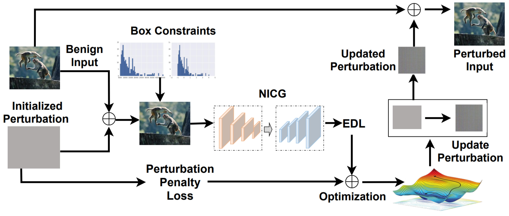
主要算法 ¶
input：
- a benign input image \(x\)
- the victim NICG model \(F\)
- a pre-defined perturbation threshold \(\epsilon\)
- and the maximum iteration number \(T\)
output
- a adversarial examples \(x'\)
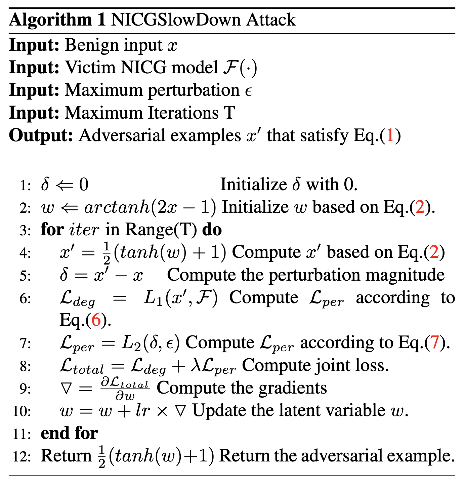
转换方法 ¶
为了达到 adversarial examples \(x'\) 不被区分的结果，有了下面的 box constraints
但是直接优化 \(\delta\) 很难，所以这里使用了一个转换方法
因为 \(tanh(\cdot) \in [-1,1]\)，所以可以满足约束，把优化变量转化成了 \(\omega\)
loss1 \(\mathcal{L}_{EOS}\)¶
这个损失函数 \(\mathcal{L}_{eos}\) 是 EOS（End-of-Sequence）依赖损失，主要用于 序列生成任务（如机器翻译、文本摘要、图像描述生成等<EOS>
- \(n\)：样本数量（或序列的时间步数
） 。 - \(i\)：第 \(i\) 个样本或时间步。
- \(l_i^{eos}\)：模型在当前时间步对
<EOS>标签的预测概率（即 \(p_i^{eos}\)） 。 - \(l_i^k\)：模型对 其他非
<EOS>标签 \(k\) 的预测概率（如词汇表中的词） 。 - \(\mathbb{E}_{k \sim p_i}\)：对非
<EOS>标签 \(k\) 按概率分布 \(p_i\) 的期望（即平均概率） 。 - 注意：此处的 \(p_i\) 是模型在时间步 \(i\) 的预测概率分布（包含
<EOS>和其他词） 。
直观解释 ¶
- 第一项 \(l_i^{eos}\)：模型预测
<EOS>的概率（即模型认为当前应终止序列的概率） 。 - 第二项 \(\mathbb{E}_{k \sim p_i} l_i^k\)：模型对所有 非
<EOS>标签 预测概率的平均值（即模型继续生成词的概率） 。 - 差值 \(l_i^{eos} - \mathbb{E}_{k \sim p_i} l_i^k\)：
- 若模型对
<EOS>的预测概率 高于其他词的平均概率，则损失增大（惩罚模型提前终止） 。 - 若模型对
<EOS>的预测概率 低于其他词的平均概率，则损失减小（鼓励模型在正确位置终止） 。
- 若模型对
- 当 \(l_i^{eos}\) 升高时，损失 \(\mathcal{L}_{eos}\) 增大 → 通过梯度下降 迫使 \(l_i^{eos}\) 降低。
- 这样模型会更倾向于继续生成词而非终止。
- 攻击者希望延长序列（如
SlowDownAttack） ，而防御方需抑制这种行为。
计算示例
假设一个文本生成任务，词汇表为 ["a", "dog", "<EOS>"]，某时间步的预测概率分布为：
- 第一项 \(l_i^{eos}\)：\(p_i^{eos} = 0.3\)。
- 第二项 \(\mathbb{E}_{k \sim p_i} l_i^k\)：
- 仅对非
<EOS>标签计算期望（即 "a" 和 "dog"） ：
$$
mathbb{E}_{k sim p_i} l_i^k = frac{0.2 + 0.5}{2} = 0.35
$$
- 或按概率加权平均（需归一化非 <EOS> 部分）：
- 单时间步损失：
- 负值表示模型更倾向于继续生成词（需优化
） 。
loss2 依赖损失 \(\mathcal{L}_{dep}\) ¶
这个损失函数 \(\mathcal{L}_{dep}\) 是 依赖损失（Dependency Loss），主要用于衡量 模型预测的置信度与其实际表现之间的偏差。它的设计目的是让模型在预测时更加 校准（Calibrated），即预测概率应与真实正确性相匹配。以下是详细解析：
- \(n\)：样本数量。
- \(i\)：第 \(i\) 个样本。
- \(o_i\)：样本 \(i\) 的真实标签（Ground Truth
） 。 - \(p_i\)：模型对样本 \(i\) 的预测概率分布（所有类别的概率
） 。 - \(l_i^{o_i}\)：模型对 真实标签 \(o_i\) 的预测概率（即 \(p_i^{o_i}\)
） 。 - \(l_i^k\)：模型对 类别 \(k\) 的预测概率（即 \(p_i^k\)
） 。 - \(\mathbb{E}_{k \sim p_i}\)：对类别 \(k\) 按概率分布 \(p_i\) 的期望。
2. 直观解释
- 第一项 \(l_i^{o_i}\)：模型对真实标签的预测概率（置信度
） 。 - 第二项 \(\mathbb{E}_{k \sim p_i} l_i^k\)：模型对所有类别预测概率的期望（即平均置信度
） 。 - 差值 \(l_i^{o_i} - \mathbb{E}_{k \sim p_i} l_i^k\)：
- 如果模型对真实标签的置信度 高于平均置信度，则损失减小（鼓励模型对正确标签更自信
） 。 - 如果模型对真实标签的置信度 低于平均置信度，则损失增大（惩罚模型对正确标签的不确定性
） 。
- 如果模型对真实标签的置信度 高于平均置信度，则损失减小（鼓励模型对正确标签更自信
计算示例
假设一个 3 分类问题，某样本的真实标签为 \(o_i=1\)，模型预测概率分布为：
- 第一项 \(l_i^{o_i}\)：\(p_i^{o_i} = 0.7\)。
- 第二项 \(\mathbb{E}_{k \sim p_i} l_i^k\)：
- 单样本损失：
- 最终损失：对所有样本取平均。
loss3 扰动损失 \(\mathcal{L}_{per}\) ¶
这个损失函数 \(\mathcal{L}_{per}\) 是一个 扰动约束损失（Perturbation Constraint Loss），主要用于 限制对抗样本与原始样本之间的差异，确保对抗扰动在可控范围内。以下是详细解析：
- \(\delta\)：对抗样本与原始样本之间的扰动大小（例如 L2 或 Linf 范数
） 。 - \(\epsilon\)：预设的最大允许扰动阈值。
- \(\|\cdot\|\)：范数计算（如 L1、L2 等
） 。
约束扰动范围
- 当扰动 \(\delta\) 不超过阈值 \(\epsilon\) 时，损失为 0，不进行惩罚。
- 当扰动 \(\delta\) 超过阈值 \(\epsilon\) 时，损失为 \(\|\delta - \epsilon\|\)，惩罚超出部分。
代码复现 - 准备工作 ¶
服务器 ¶
这次我是在 autodl 上租了一个 3090 进行实验。
autodl 加速：需要使用 hugging face 的时候打开学术资源加速
source /etc/network_turbo
数据集 ¶
COCO - Common Objects in Context
For more details about training the image caption neural networks, you can follow the tutorial
caption¶
这里使用 utils.py中create_input_files这个函数。
from utils import create_input_files
create_input_files(
dataset='flickr8k',
karpathy_json_path='/root/autodl-tmp/Capstone/CVPR22_NICGSlowDown/dataset/flickr8k/dataset_flickr8k.json',
image_folder='/root/autodl-tmp/Capstone/CVPR22_NICGSlowDown/dataset/flickr8k/RAW',
captions_per_image=5, # 从名称中可以看出
min_word_freq=5, # 从名称中可以看出
output_folder='/root/autodl-tmp/Capstone/CVPR22_NICGSlowDown/dataset/flickr8k/CAP',
max_len=100 # 这是默认值，因为没有在名称中体现
)
代码复现 - 结果展示 ¶
论文中使用了两个数据集、两个 model
这里因为设备限制，也为了节省时间，我只尝试了第一个 dataset Flickr8k
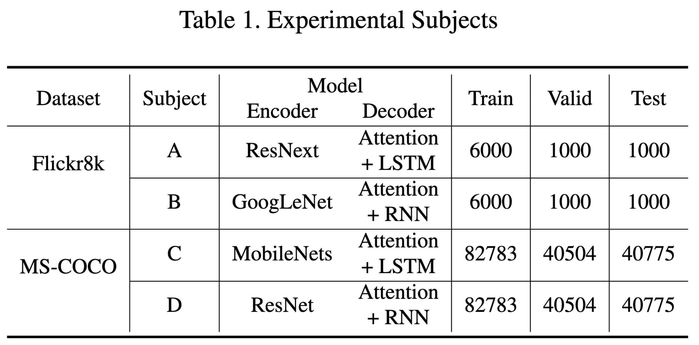
Metrics - Table2¶
这里用的是论文中提到的 Metrics， 即I-loop ,I_Latency (CPU,GPU)
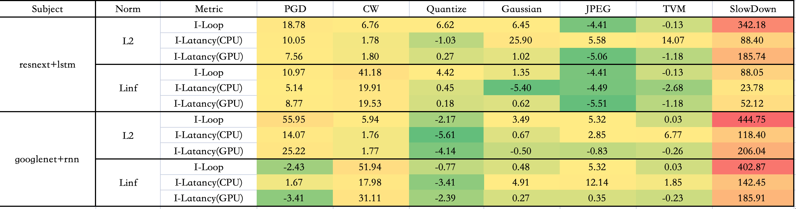
可能由于使用硬件不同，复现效果和原论文数据有一定差别，但是 SlowDown 的效果还是可以体现的
下图是原论文的数据图
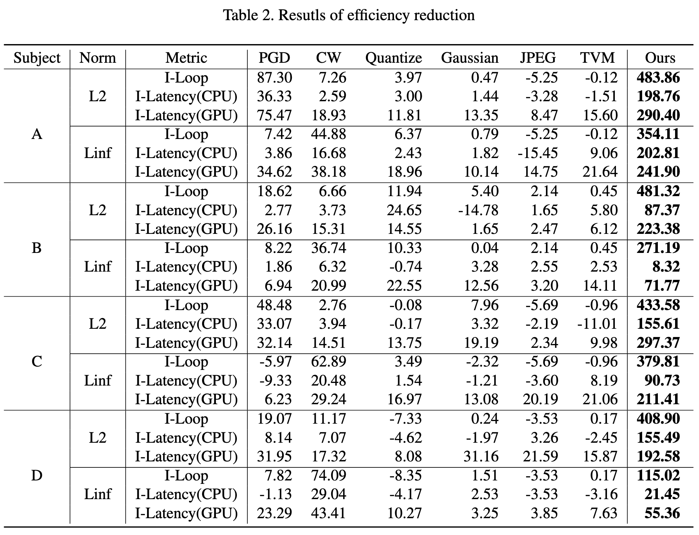
图片 - 原文 Fig6 ¶
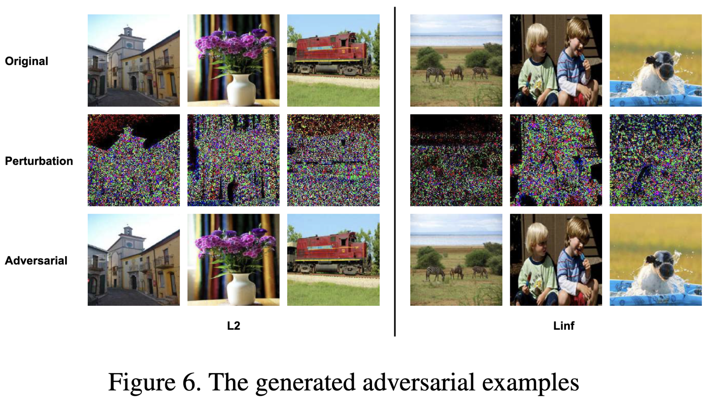
我选择了部分数据集中的图片展示，可以发现对抗攻击样本和原始图片肉眼不可分
L2_flickr8k_googlenet_rnn
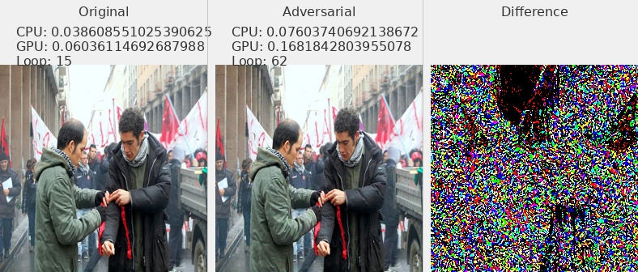

L2_flickr8k_resnext_lstm
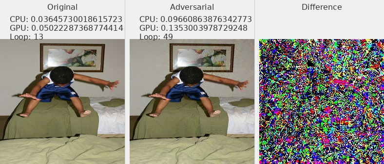
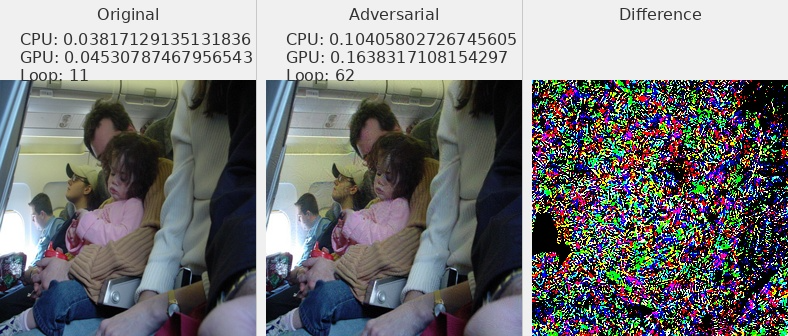
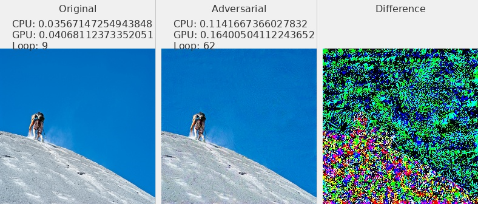
Linf_flickr8k_googlenet_rnn
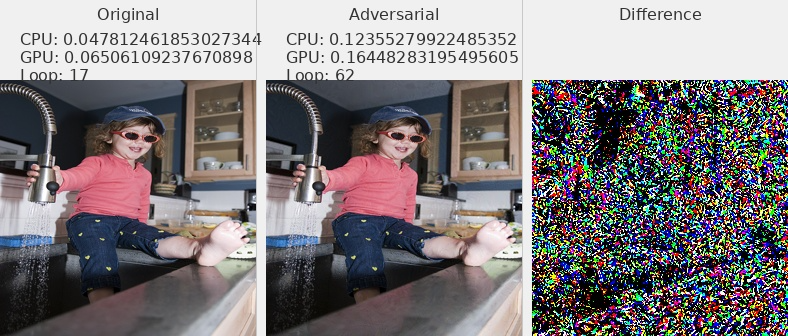
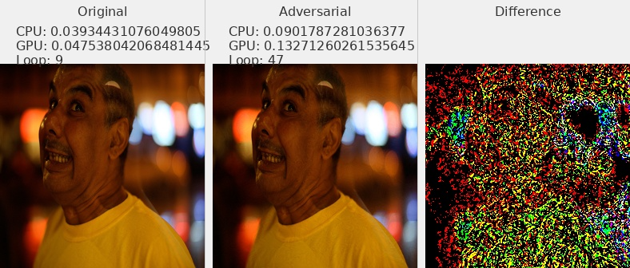
Linf_flickr8k_resnext_lstm
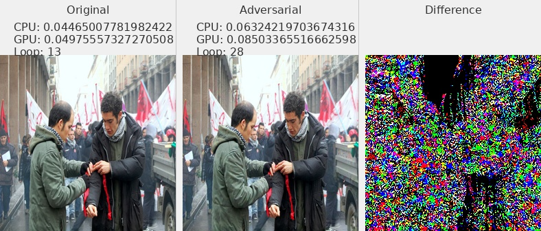
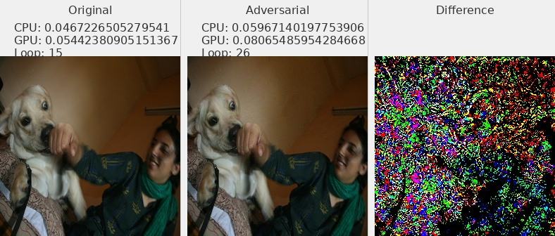
Distribution¶
Norm of Pertubation - Table3¶
论文中 Table3
主要论证 average perturbation size
复现结果与论文结果较为接近
| Subject | Norm | PGD | CW | Quantize | Gaussian | JPEG | TVM | SlowDown |
|---|---|---|---|---|---|---|---|---|
| A | L2 | 39.97904814 | 0.031572578 | 162.2170346 | 38.00815206 | 162.5883692 | 0.504508379 | 5.232429061 |
| A | Linf | 0.030000001 | 0.034108425 | 0.989821747 | 0.029954669 | 0.944367203 | 0.001945466 | 0.021404715 |
| B | L2 | 39.98188388 | 0.042649064 | 162.2420903 | 38.00864502 | 162.5883692 | 0.504508379 | 4.580114361 |
| B | Linf | 0.029999993 | 0.035503504 | 0.989768272 | 0.029944356 | 0.944367203 | 0.001945466 | 0.040621143 |
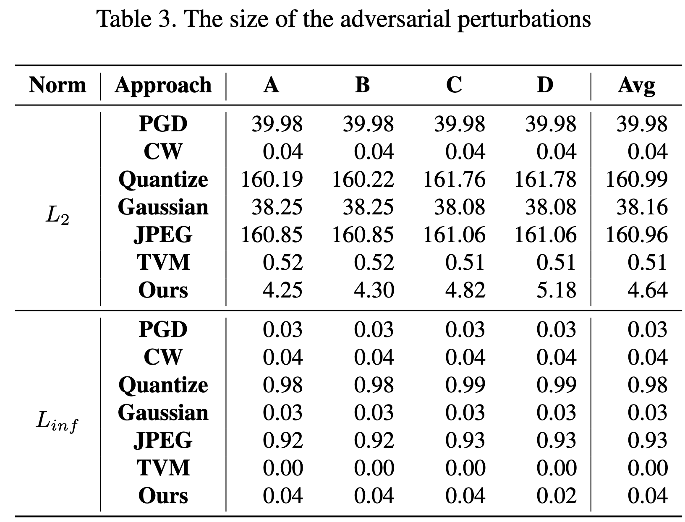
Bleu 值 - Table4 ¶
Subject-B Linf 这个效果不是很好，其他数值较为接近
| Subject | Norm | Ori | Adv | Decrease |
|---|---|---|---|---|
| A | L2 | 0.11 | 0.00 | 100.00 |
| A | Linf | 0.11 | 0.01 | 94.58 |
| B | L2 | 0.11 | 0.01 | 89.12 |
| B | Linf | 0.11 | 0.03 | 68.75 |
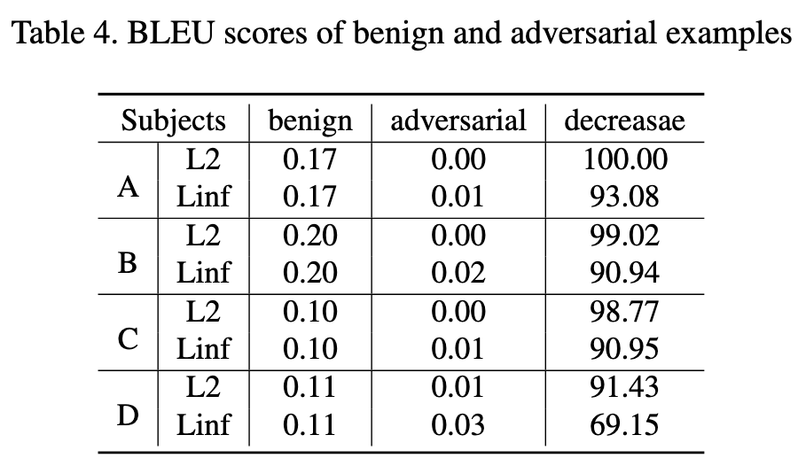
HyperPerameters - Table5¶
这里是使用了不同的 \(\lambda\)
$$
mathcal{L}{deg}=mathcal{L}
$$
在代码}+lambdamathcal{L}_{depslowdown.py中，是初始化的这一句
self.coeff = config['coeff']
在generate_adv.py的 config 中设置coeff这个参数实现
config = {
'lr': 0.001,
'beams': 1,
'coeff': 100,
'max_len': 60,
'max_iter': 1000,
'max_per': MAX_PER_DICT[attack_name]
}
这里重复实验应该可以得到数据，由于时间原因没有复现这一个表格
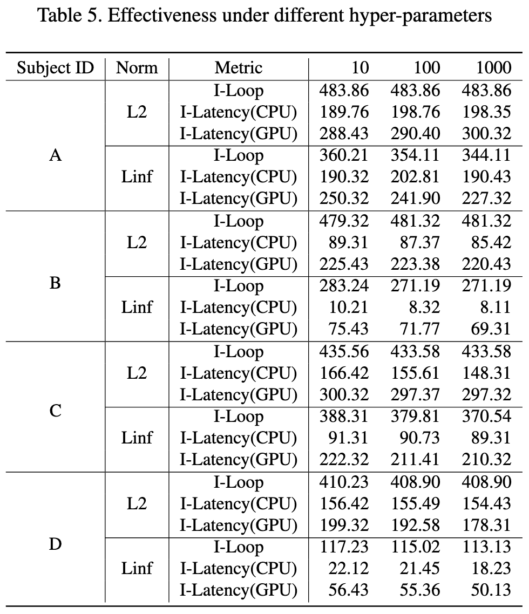
代码复现 - 问题解决 ¶
uv 安装 ¶
uv env --python=3.8.10
uv pip install -r requirements.txt
requirements.txt
这里放一下我自己最后环境的 requirements.txt，可以参考一下。
absl-py==2.3.1
astunparse==1.6.3
cachetools==5.5.2
certifi==2025.7.14
charset-normalizer==3.4.2
click==8.1.8
filelock==3.16.1
flatbuffers==25.2.10
fsspec==2025.3.0
gast==0.4.0
google-auth==2.40.3
google-auth-oauthlib==1.0.0
google-pasta==0.2.0
grpcio==1.70.0
h5py==3.11.0
idna==3.10
imageio==2.35.1
importlib-metadata==8.5.0
jax==0.4.13
jinja2==3.1.6
joblib==1.4.2
keras==2.12.0
lazy-loader==0.4
libclang==18.1.1
markdown==3.7
markupsafe==2.1.5
ml-dtypes==0.2.0
mpmath==1.3.0
networkx==3.1
nltk==3.9.1
numpy==1.23.5
nvidia-cublas-cu12==12.1.3.1
nvidia-cuda-cupti-cu12==12.1.105
nvidia-cuda-nvrtc-cu12==12.1.105
nvidia-cuda-runtime-cu12==12.1.105
nvidia-cudnn-cu12==9.1.0.70
nvidia-cufft-cu12==11.0.2.54
nvidia-curand-cu12==10.3.2.106
nvidia-cusolver-cu12==11.4.5.107
nvidia-cusparse-cu12==12.1.0.106
nvidia-nccl-cu12==2.20.5
nvidia-nvjitlink-cu12==12.9.86
nvidia-nvtx-cu12==12.1.105
oauthlib==3.3.1
opt-einsum==3.4.0
packaging==25.0
pillow==10.4.0
protobuf==4.25.8
pyasn1==0.6.1
pyasn1-modules==0.4.2
pywavelets==1.4.1
regex==2024.11.6
requests==2.32.4
requests-oauthlib==2.0.0
rsa==4.9.1
scikit-image==0.21.0
scipy==1.10.1
setuptools==75.3.2
six==1.17.0
sympy==1.13.3
tensorboard==2.12.3
tensorboard-data-server==0.7.2
tensorboard-logger==0.1.0
tensorflow==2.12.0
tensorflow-estimator==2.12.0
tensorflow-io-gcs-filesystem==0.34.0
termcolor==2.4.0
tifffile==2023.7.10
torch==2.4.1
torchvision==0.19.1
tqdm==4.67.1
triton==3.0.0
typing-extensions==4.13.2
urllib3==2.2.3
werkzeug==3.0.6
wheel==0.45.1
wrapt==1.14.1
zipp==3.20.2
当然也可以使用 conda 进行环境管理，但是我这一次为了学习uv进行环境管理，所以都使用了uv。
scipy 库 ¶
ImportError: cannot import name 'imread' from 'scipy.misc'
from scipy.misc import imread
可以更改scipy的版本
pip install scipy==1.2.0
但是我最后采用的解决方案其实是换成了其他库来实现。
from imageio import imread
from PIL import Image
import numpy as np
......
img = imread(impaths[i])
if len(img.shape) == 2:
img = img[:, :, np.newaxis]
img = np.concatenate([img, img, img], axis=2)
img = np.array(Image.fromarray(img).resize((256, 256)))
......
不在一个 device 上 ¶
这里的问题是 allcaps 在 CPU 上，而 sort_ind 在 GPU 上。所以需要放到一个 device 上面
with torch.no_grad():
# Batches
for i, (imgs, caps, caplens, allcaps) in enumerate(val_loader):
# Move to device, if available
imgs = imgs.to(device)
caps = caps.to(device)
caplens = caplens.to(device)
allcaps = allcaps.to(device) # 添加这行，确保allcaps也在正确的设备上
代码复现 - 代码解读 ¶
训练与攻击流程 ¶
- 训练阶段：
CUDA_VISIBLE_DEVICES=$1 python train.py --config=flickr8k_googlenet_rnn.json
train.py
- 调用时机：项目开始，用于训练模型
- 依赖：config/*.json, utils.py, datasets.py, src/*
- 输出：模型权重如BEST_flickr8k_googlenet_rnn.pth.tar
- 对抗样本生成阶段： 按顺序执行不同的攻击方法，每种攻击都测试 L2 和 Linf 两种范数：
generate_adv.py
- 调用时机：模型训练完成后
- 依赖：训练好的模型权重，utils.py（攻击方法）
- 输出：对抗样本文件（保存在 adv/ 目录）
- 测试与分析阶段：
test_latency.py
- 调用时机：对抗样本生成后
- 依赖：生成的对抗样本，训练好的模型
- 输出：延迟测试结果（保存在 latency/ 目录）
loss_impact.py
- 调用时机：最后阶段
- 依赖：训练好的模型
- 输出：损失函数研究结果（保存在 study/ 目录）
metrics 测量方法 ¶
主要需要测量三个主要的 metrics
对于每个样本，记录了以下信息：
device_res[0]: CUDA 设备上的执行时间（运行 5 次的总时间）device_res[1]: CPU 设备上的执行时间（运行 1 次的时间）device_res[2]: 预测的序列长度（pred_len）
其中代码里面计算的时候 gpu 运行 5 次的总时长，cpu 运行 1 次的总时长
for device in DEVICE_LIST:
encoder = encoder.to(device).eval()
decoder = decoder.to(device).eval()
img = img.to(device)
max_iter = ITER_DICT[device]
t1 = time.time()
for _ in range(max_iter):
pred_len = prediction_len_batch(img, encoder, decoder, word_map, max_length, device)
t2 = time.time()
device_res.append(t2 - t1)
device_res.append(pred_len[0])
res.append(device_res)
def prediction_len_batch(imgs, encoder, decoder, word_map, max_length, device):
···
return [get_seq_len(seq, word_map) for seq in seqs]
对于每个序列，通过 get_seq_len 计算从开始到 <end> 标记之间的词数
而prediction_len_batch返回的是一个 batch 当中每个样本的预测序列长度。
在实验中，batch=1, 所以pred_len[0]是序列的长度
参数说明 ¶
-
task 参数：选择要测试的模型：
- 0: coco_mobilenet_rnn
- 1: coco_resnet_lstm
- 2: flickr8k_googlenet_rnn
- 3: flickr8k_resnext_lstm
-
attack 参数：
- 0: SlowDownAttack
- 1: PGDAttack
- 2: CWAttack
- 3: TVMAttack
- 4: GaussianAttack
- 5: JPEGAttack
- 6: Quantize
-
norm 参数：
- 0: L2 范数
- 1: Linf 范数（无穷范数）
代码写法 ¶
这个库当中的 attack 方法使用了继承的方法，即先谢了一个 attack 的基类，定义了几种 attack 的基础方法。
然后再用继承的方法，写出了不同的 attack 方法。
train.py - 训练出 NICG model ¶
-
初始化阶段：
- 加载配置文件（模型参数、训练参数等）
- 初始化编码器（Encoder）和解码器（Decoder）
- 设置优化器和损失函数
- 加载数据集和词表映射
-
训练循环：
- 每个 epoch 包含训练和验证两个阶段
- 训练阶段：调用
train()函数进行模型训练 - 验证阶段：调用
validate()函数评估模型性能 - 根据验证结果保存检查点，更新最佳模型
-
前向传播：
# 编码器处理图像 imgs = encoder(imgs) # 输出: [batch_size, enc_image_size, enc_image_size, encoder_dim] # 解码器生成描述 scores, caps_sorted, decode_lengths, alphas, sort_ind = decoder(imgs, caps, caplens) -
损失计算：
# 交叉熵损失 loss = criterion(scores, targets) # 注意力正则化损失（双重随机注意力） loss += alpha_c * ((1. - alphas.sum(dim=1)) ** 2).mean()alpha_c: 注意力正则化系数alphas: 注意力权重 [batch_size, num_pixels]
-
性能指标：
- Top-5 准确率：预测的前 5 个最可能的词中包含正确词的比例
- BLEU-4 分数：评估生成的描述与参考描述的相似度
训练优化策略
-
学习率调整：
- 当验证性能停止提升时，降低学习率
- 每 8 个 epoch 无改善，学习率乘以 0.8
-
梯度裁剪：
if grad_clip is not None: clip_gradient(decoder_optimizer, grad_clip)- 防止梯度爆炸
- 将梯度值限制在一定范围内
-
早停策略：
if epochs_since_improvement == 20: break- 当验证性能连续 20 个 epoch 没有提升时停止训练
beam search
在验证和测试阶段，使用束搜索生成最终的图像描述：
def caption_image_beam_search(encoder, decoder, image, word_map, beam_size=3):
# 维护 k 个最可能的序列
k = beam_size
# 计算每个时间步的 top-k 概率
# 选择得分最高的序列作为最终输出
utils.py - 工具函数 ¶
utils.py: 工具函数文件
- create_input_files: 处理原始数据集，创建训练所需的输入文件
- caption_image_beam_search: 使用束搜索生成图像描述
- caption_image_batch: 批量生成图像描述
- 包含各种辅助函数（损失计算、优化器调整、准确率计算等）
generate_adv.py - 生成对抗样本 ¶
这个文件就是使用不同的攻击方法，对我们训练好的 NICG 模型，生成对抗样本对。
- 生成对抗样本
- 支持多种攻击方法和规范（L2 和 Linf 范数）
- 保存对抗样本结果
-
关键参数：
ADV_NUM = 1000 # 生成对抗样本的数量 BATCH = 20 # 批处理大小 CAP_PER_IMG = 5 # 每张图片的描述数量 -
攻击配置：
config = { 'lr': 0.001, # 优化器学习率 'beams': 1, # 束搜索大小 'coeff': 100, # 攻击系数 'max_len': 60, # 最大序列长度 'max_iter': 1000, # 最大迭代次数 'max_per': MAX_PER_DICT[attack_name] # 最大扰动范围 } -
支持的攻击方法（从 utils.py
） ：ATTACK_METHOD = [ SlowDownAttack, # 减速攻击 PGDAttack, # 投影梯度下降攻击 CWAttack, # Carlini & Wagner 攻击 TVMAttack, # 总变分最小化攻击 GaussianAttack, # 高斯噪声攻击 JPEGAttack, # JPEG压缩攻击 Quantize, # 量化攻击 ] -
工作流程：
- 加载预训练模型和数据集
- 根据指定的攻击类型和范数创建攻击器
- 批量生成对抗样本
- 保存原始图像和对抗样本对
test_latency.py - 测试推理速度 ¶
这个文件就是测试我们生成的对抗样本对，对模型推理速度的影响。
- 测试模型在不同设备（CPU/GPU）上的延迟
- 比较原始图像和对抗样本的处理时间
- 评估攻击对模型推理速度的影响
-
测试配置：
DEVICE_LIST = ['cuda', 'cpu'] # 测试设备 ITER_DICT = { 'cuda': 5, # GPU上运行5次取平均 'cpu': 1 # CPU上运行1次 } -
效率测试流程：
def test_efficiency(imgs, encoder, decoder, word_map, max_length):
# 对每张图片
for img in imgs:
# 在每个设备上测试
for device in DEVICE_LIST:
# 多次运行取平均
for _ in range(ITER_DICT[device]):
# 测量推理时间
pred_len = prediction_len_batch(...)
- 结果保存：
torch.save(
[ori_efficiency, adv_efficiency],
os.path.join('latency', f'{attack_type}_{attack_name}_{task_name}.latency')
)
loss_impact.py - 参数影响分析 ¶
对应论文的 Table5
-
主要功能：
- 研究不同损失函数对对抗攻击效果的影响
- 对比分析不同损失类型下的攻击结果
- 生成用于研究的对抗样本
-
实验设置：
# 基本参数 ADV_NUM = 1000 # 实验样本数量 BATCH = 20 # 批处理大小 # 攻击配置 config = { 'lr': 0.001, # 学习率 'beams': 1, # 束搜索大小 'coeff': 100, # 攻击系数 'max_len': 60, # 最大序列长度 'max_iter': 1000, # 最大迭代次数 'max_per': MAX_PER_DICT[attack_name] # 最大扰动范围 } -
实验维度：
- 范数类型（attack_norm
） ：- 0: L2 范数
- 1: Linf 范数（无穷范数）
- 损失类型（loss_type
） ：- 0: 原始损失函数
- 1: 改进的损失函数
slowdown.py- 攻击函数 ¶while len(complete_seqs) < batch_size: # 1. Embed previous word embeddings = decoder.embedding(k_prev_words.to(device)).squeeze(1) # (batch_size, embed_dim) # 2. Attention计算 awe, alpha = decoder.attention(encoder_out, h) # (batch_size, encoder_dim), (batch_size, num_pixels) # 3. Gating mechanism gate = decoder.sigmoid(decoder.f_beta(h)) # (batch_size, encoder_dim) awe = gate * awe # 加权注意力特征 # 4. LSTM/GRU 解码 if type(decoder.decode_step) == torch.nn.LSTMCell: h, c = decoder.decode_step(torch.cat([embeddings, awe], dim=1), (h, c)) elif type(decoder.decode_step) == torch.nn.GRUCell: h = decoder.decode_step(torch.cat([embeddings, awe], dim=1), h) # 5. 计算下一个词的概率分布 scores = decoder.fc(h) # (batch_size, vocab_size) scores = F.softmax(scores, dim=-1) next_word_probs, next_word_inds = scores.max(1) # 取概率最高的词 # 6. 强制计算 <end> token 的概率（用于对抗攻击） next_word_probs = \ scores[:, word_map['<end>']] + \ (next_word_inds != word_map['<end>']) * next_word_probs # 7. 更新序列和分数 next_word_inds = next_word_inds.cpu() seqs = torch.cat([seqs, next_word_inds.unsqueeze(1)], dim=1) # (batch_size, step+1) seq_scores = torch.cat([seq_scores, next_word_probs.unsqueeze(1)], dim=1) # 8. 检查是否生成 <end> token incomplete_inds = [ind for ind, next_word in enumerate(next_word_inds) if next_word != word_map['<end>']] complete_inds = set(range(batch_size)) - set(incomplete_inds) complete_seqs.update(complete_inds) # 9. 更新输入词 k_prev_words = next_word_inds.unsqueeze(1) # 10. 检查是否超过最大长度 if step > max_length: break step += 1 - 范数类型（attack_norm
-
Embedding 层：将上一个词
k_prev_words转换为词向量embeddings。 - 注意力机制：
decoder.attention(encoder_out, h)计算当前隐藏状态h对图像特征的注意力权重alpha。awe是加权后的上下文向量（Attended Visual Features） 。
- Gating 机制：
- 使用
decoder.f_beta(h)和sigmoid计算门控值gate，调整awe的权重。
- 使用
- LSTM/GRU 解码：
- 输入
： [embeddings, awe]（词向量 + 注意力特征） 。 - 输出：更新隐藏状态
h（和c，如果是 LSTM） 。
- 输入
- Softmax 计算：
decoder.fc(h)输出词表概率分布scores。next_word_probs是最高概率词的分数。
- 强制计算
<end>概率：- 如果当前词不是
<end>，则next_word_probs保持不变；否则，使用<end>的概率。 - 这是对抗攻击的关键，因为攻击目标是让模型在
<end>处停留更久（增加推理时间） 。
- 如果当前词不是
- 更新序列和分数：
seqs存储生成的序列。seq_scores存储每个词的概率分数（用于计算对抗损失） 。
- 终止条件：
- 如果生成
<end>或超过max_length，则停止解码。
- 如果生成
distribution.py¶
- 输入：从
latency/目录加载不同攻击方法（L2和Linf）的延迟测试结果（.latency文件） 。 - 处理：将原始（
ori_res）和对抗（adv_res）的延迟数据合并，并重新组织为结构化格式。 - 输出：保存为 CSV 文件到
dist/目录，文件命名格式为____dist____{task_name}_{attack_name}.csv。
latency_res = torch.load(latency_file) # 加载.latency文件
ori_res, adv_res = latency_res # 解包原始和对抗结果
- 假设
ori_res和adv_res是列表，每个元素代表一个样本的延迟测量值（例如不同层的推理时间） 。
for ori, adv in zip(ori_res, adv_res):
tmp = np.array(ori + adv).reshape([1, -1]) # 将ori和adv拼接为一行
res.append(tmp)
res = np.concatenate(res, axis=0) # 堆叠所有样本
- 每个样本的原始和对抗数据被拼接为一行（例如
ori有 3 个值，adv有 4 个值，则合并后为 7 列） 。
- 如果
ori_res[0] = [t1, t2, t3]，adv_res[0] = [t4, t5, t6, t7]，则合并后的一行为[t1, t2, t3, t4, t5, t6, t7]。
collect_latency.py¶
根据原始数据计算 metrics
0.15, 0.12, 0.18, 0.20, 0.10, 0.05, 0.30 # 循环延迟平均增加（攻击类型1-6，最后一列是类型0）
0.10, 0.08, 0.12, 0.15, 0.05, 0.02, 0.25 # CPU延迟平均增加
0.20, 0.15, 0.25, 0.30, 0.12, 0.08, 0.40 # GPU延迟平均增加
0.50, 0.40, 0.60, 0.70, 0.30, 0.20, 0.80 # 循环延迟最大增加
0.30, 0.25, 0.35, 0.40, 0.20, 0.15, 0.50 # CPU延迟最大增加
0.60, 0.50, 0.70, 0.80, 0.40, 0.30, 0.90 # GPU延迟最大增加
- 每行含义： 1-3行：平均延迟增加（循环、CPU、GPU）。 4-6行：最大延迟增加（循环、CPU、GPU）。
- 每列含义： 前6列：攻击类型1-6的结果，最后一列：攻击类型0的结果。
acc.py¶
计算 bleu 值
pertubation.py¶
计算 Table-3，也就是算 average perturbation size
输出到PerRes目录
-
每个模型的单独结果文件 (
task_name + '_' + attack_name + '.csv')：这个文件的格式是： - 每行代表一个样本 - 有7列，对应7种攻击方法的扰动值 - 特别注意：列的顺序是 [1,2,3,4,5,6,0]，把第0种攻击方法的结果放到最后一列final_res = np.concatenate([delta_list[:, 1:], delta_list[:, 0:1]], axis=1) -
最终的平均结果文件 (
average.csv)：这个文件包含了： - 每个元素是all_res = np.concatenate(all_res, axis=1)(final_res < MAX_PER_DICT[attack_name]).mean(0)- 表示扰动小于阈值的样本比例 - 对每个模型和每种攻击类型都有一个这样的统计值 -
几个 loss 的实现 ¶
Pertubation penalty¶
这个损失函数在 SlowDownAttack 类中实现：
def compute_per(self, adv_imgs, ori_imgs):
"""计算扰动大小"""
if self.attack_norm == L2:
current_L = self.mse_Loss(
self.flatten(adv_imgs),
self.flatten(ori_imgs)).sum(dim=1)
elif self.attack_norm == Linf:
current_L = (self.flatten(adv_imgs) - self.flatten(ori_imgs)).max(1)[0]
else:
raise NotImplementedError
return current_L
然后在 run_attack 和 run_diff_loss 方法中使用：
current_per = self.compute_per(adv_images, ori_img)
per_loss = self.relu(current_per - self.max_per) # 这里实现了分段函数
per_loss = per_loss.sum()
这里的实现对应公式：
- current_per 计算 delta (扰动大小)
- self.max_per 对应 epsilon (扰动阈值)
- self.relu(current_per - self.max_per) 实现了分段函数：
- 当 delta leq epsilon 时，输出0
- 当 delta > epsilon 时，输出 ||delta-epsilon||
依赖损失 ¶
这个在 prediction_batch 函数中实现：
def prediction_batch(imgs, encoder, decoder, word_map, max_length, device):
# ...
scores = decoder.fc(h) # (s, vocab_size)
scores = F.softmax(scores, dim=-1) # 计算概率分布
next_word_probs, next_word_inds = scores.max(1) # 获取最大概率的词
# 计算每个位置的得分
seq_scores = torch.cat([seq_scores, next_word_probs.unsqueeze(1)], dim=1)
这个损失函数的实现体现在：
- scores = F.softmax(scores, dim=-1) 计算每个位置的概率分布 p_i
- next_word_probs, next_word_inds = scores.max(1) 获取最可能的词 o_i 及其概率 l_i^{o_i}
- 通过 softmax 计算得到的 scores 包含了 mathbb{E}_{k sim p_i} l_i^k
在 SlowDownAttack 类中，这两个损失被组合使用：
def run_attack(self, x):
# ...
adv_loss = self.compute_adv_loss(adv_images) # 包含依赖损失
current_per = self.compute_per(adv_images, ori_img) # 扰动损失
per_loss = self.relu(current_per - self.max_per)
per_loss = per_loss.sum()
loss = adv_loss + self.coeff * per_loss # 组合损失
整个攻击过程中：
1. mathcal{L}{per} 确保生成的对抗样本扰动不会太大，保持在可接受范围内
2. mathcal{L} 通过影响模型在每个位置的预测概率分布，来实现对序列生成过程的干扰
3. 两个损失通过系数 self.coeff 进行平衡，共同指导对抗样本的生成
这种实现方式使得攻击既能保持对抗样本的视觉质量（通过扰动损失约束
EOS 依赖损失 ¶
在 slowdown.py 和captionAPI.py当中有所体现
def compute_adv_loss(self, adv_imgs):
seqs, seq_scores = prediction_batch_target_end(
adv_imgs, self.encoder, self.decoder,
self.word_map, self.max_len, self.device
)
loss = self.bce_loss(seq_scores, torch.zeros_like(seq_scores))
return loss.mean(1).sum()
- 作用：计算对抗样本的损失，目标是让模型生成更长的序列（延迟
<EOS>的出现） 。 - 关键步骤：
prediction_batch_target_end：生成对抗样本的序列和分数seq_scores。bce_loss：二元交叉熵损失，将seq_scores与全零张量比较，强制降低<EOS>的概率。
next_word_probs = \
scores[:, word_map['<end>']] + \
(next_word_inds != word_map['<end>']) * next_word_probs
<EOS>，则 next_word_probs 保留最高概率词的分数。
- 如果当前预测词是 <EOS>，则 next_word_probs 直接使用 <EOS> 的概率。
- 这样设计的目的是让损失函数能够 显式区分模型是否预测了 <EOS>。
- 二元交叉熵 (BCE Loss)：
- 其中
p_i^{eos}是<EOS>的概率（来自seq_scores） 。 - 最小化该损失等价于 强制
p_i^{eos}趋近于 0（即延迟终止） 。
原始问题中的 \(\mathcal{L}_{eos}\) 公式：
在代码中 并未直接实现此公式，但通过以下方式间接实现类似效果：
1. prediction_batch_target_end 中的 next_word_probs 计算已经隐含了 <EOS> 与其他词概率的对比。
2. bce_loss 通过强制 <EOS> 概率降低，实现了类似 \(\mathcal{L}_{eos}\) 的目标（抑制 <EOS> 的出现
代码中的具体实现链路 ¶
- 输入对抗样本
： adv_imgs（通过扰动生成的图像） 。 - 生成序列和分数：
- 调用
prediction_batch_target_end，返回seq_scores（包含每个时间步的<EOS>调整概率） 。
- 调用
- 计算损失：
- 使用
bce_loss将seq_scores与零张量比较，惩罚高<EOS>概率。
- 使用
- 优化对抗样本：
- 在
run_attack中，联合扰动约束损失 (per_loss) 和对抗损失 (adv_loss) 更新对抗样本。
- 在
- 当前代码：通过
bce_loss隐式实现 \(\mathcal{L}_{eos}\) 的目标（抑制<EOS>） 。 - 关键函数：
prediction_batch_target_end中的next_word_probs计算是核心。 - 设计意图：攻击者希望模型生成更长序列，因此需降低
<EOS>概率，增加计算时间。